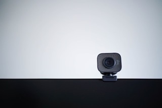

Glen's Desk
Welcome to my desk, a microcosm of productivity where essentials converge to fuel my daily endeavors. At its core sits a sleek monitor, its vibrant display serving as both canvas and conduit for ideas and tasks. With each pixel, it beckons exploration and innovation, infusing the workspace with a sense of boundless potential.

Adjacent to the monitor rests my steadfast companion, the mouse, its ergonomic design seamlessly guiding my cursor through the digital realm with precision and ease. With every click and scroll, it becomes an extension of my thoughts, facilitating the fluid execution of projects and presentations. Comfortable in hand and responsive in action, the mouse embodies the rhythm of my workflow, ensuring efficiency in every maneuver.
Perched atop the monitor, a vigilant webcam stands ready to bridge the gap between virtual meetings and face-to-face interactions. With its high-definition lens and crystal-clear audio, it transforms my desk into a nexus of connection, enabling seamless communication across distances. Whether collaborating with colleagues or catching up with loved ones, the webcam serves as a beacon of presence in an increasingly interconnected world, enriching both professional and personal interactions alike.
Mouse
Enter the realm of seamless navigation and effortless precision with the Apple Magic Mouse, a masterpiece of design and functionality that graces my desk. With its sleek, minimalist aesthetic and smooth, ergonomic contours, the Magic Mouse is more than just a peripheral: it's a statement of elegance and innovation. Its seamless integration with the Apple ecosystem elevates the user experience, offering a harmonious blend of form and function that enhances productivity and creativity.

At the heart of the Magic Mouse lies its intuitive touch-sensitive surface, a marvel of engineering that responds to the subtlest gestures with unparalleled accuracy. With a swipe or a tap, I effortlessly navigate through documents, web pages, and applications, gliding through tasks with the fluidity and grace of a conductor guiding an orchestra. Whether zooming in on intricate details or scrolling through expansive timelines, the Magic Mouse anticipates my every move, adapting to the nuances of my workflow with finesse.
In the ever-evolving landscape of technology, the Apple Magic Mouse remains a beacon of innovation and elegance, setting the standard for what a modern peripheral should aspire to be. With its seamless integration, intuitive controls, and unparalleled versatility, it transforms the desktop into a canvas of possibility, inviting exploration and creativity at every touch. As it glides effortlessly across my desk, the Magic Mouse is more than just a tool – it's a symbol of the seamless harmony between form and function, enriching my digital experience in ways both subtle and profound.
Monitor
Enter the realm of visual splendor with the LG 4K monitor, a masterpiece of display technology that graces my desk with its stunning clarity and immersive experience. At the heart of this monitor lies a wealth of pixels, meticulously arranged to deliver breathtaking detail and lifelike imagery. From crisp text to vibrant colors, every element on the screen comes to life with unparalleled clarity and precision, transforming the mundane into the extraordinary.
With its expansive screen real estate and razor-sharp resolution, the LG 4K monitor offers a canvas for creativity and productivity unlike any other. Whether I'm editing high-resolution photographs, watching immersive 4K videos, or multitasking across multiple windows, the monitor's vast expanse accommodates every task with ease. Its IPS panel ensures consistent color accuracy and wide viewing angles, allowing me to share the visual feast with others without compromise.
Beyond its stunning visuals, the LG 4K monitor is a testament to versatility and innovation, equipped with a host of features designed to enhance the user experience. From split-screen functionality to advanced gaming modes, it adapts to the diverse needs of modern work and entertainment. With its sleek design and slim bezels, it seamlessly integrates into any workspace, elevating both form and function in equal measure. As it illuminates my desk with its brilliance, the LG 4K monitor is more than just a display: it's a gateway to a world of endless possibilities, where every pixel tells a story and every detail matters.
Webcam
Meet my vigilant companion, the webcam, perched atop my monitor like a silent sentinel, ready to bridge the gap between virtual meetings and face-to-face interactions. With its high-definition lens and crystal-clear audio, it transforms my desk into a hub of connection, enabling seamless communication across distances. Whether collaborating with colleagues, catching up with loved ones, or attending virtual events, the webcam serves as a beacon of presence in an increasingly interconnected world, enriching both professional and personal interactions alike.
Its plug-and-play simplicity ensures effortless setup, allowing me to dive into conversations and collaborations with ease. With just a click, it springs to life, capturing every nuance and expression with clarity and precision. Whether in a dimly lit room or bathed in natural sunlight, its adaptive technology ensures optimal image quality, making every virtual encounter feel as vibrant and lifelike as if we were meeting in person.
Beyond its technical prowess, the webcam embodies the essence of connectivity and camaraderie, forging bonds and fostering collaboration across borders and time zones. As it captures the moments that matter most, from brainstorming sessions to virtual celebrations, it becomes more than just a device; it becomes a conduit of human connection, bridging distances and bringing people together in ways both profound and meaningful.
USB Thumbdrive
Enter the realm of portable storage with the USB thumb drive, a diminutive yet mighty tool that holds the key to transporting essential files and documents with unwavering reliability. With its compact design and capacious memory, this 16GB wonder packs a punch far beyond its modest size. From important presentations to cherished memories, it serves as a guardian of data, safeguarding the essence of my digital life with steadfast resilience.
Its plug-and-play simplicity belies its power, offering seamless compatibility with a myriad of devices and operating systems. Whether I'm transferring files between my laptop and desktop, or sharing documents with colleagues on the go, the USB thumb drive effortlessly bridges the gap between the physical and digital realms. With a swift insert and a click, it becomes a conduit of connectivity, empowering me to transport data with the ease and efficiency of a digital nomad traversing the information superhighway.
Beyond its utility, the USB thumb drive embodies the spirit of versatility and adaptability, accommodating the diverse needs of modern life with grace and aplomb. Whether I'm backing up important files, storing multimedia content, or booting into a portable operating system, it rises to the occasion with unwavering reliability. As it nestles among the digital accouterments on my desk, the USB thumb drive stands as a silent sentinel of data integrity, ready to safeguard and transport the bits and bytes of my digital journey.